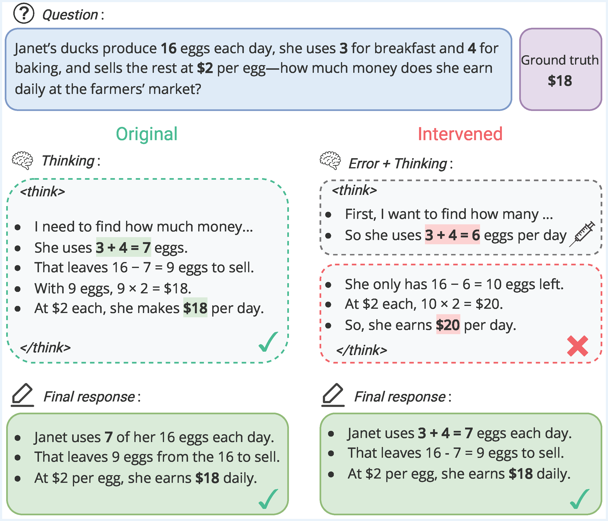
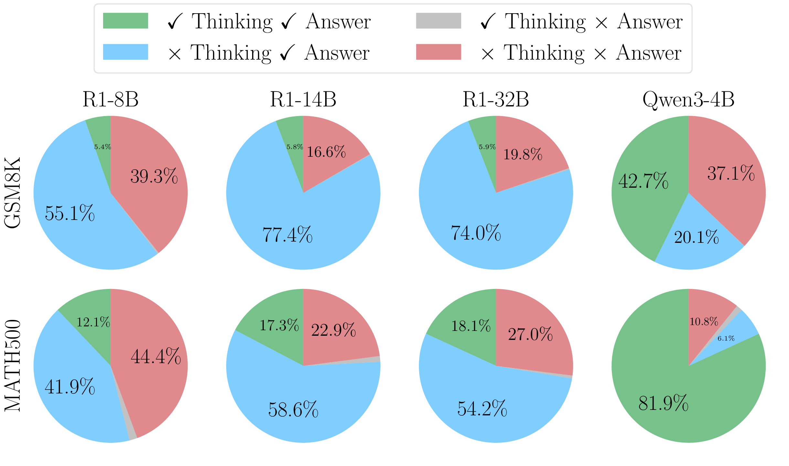
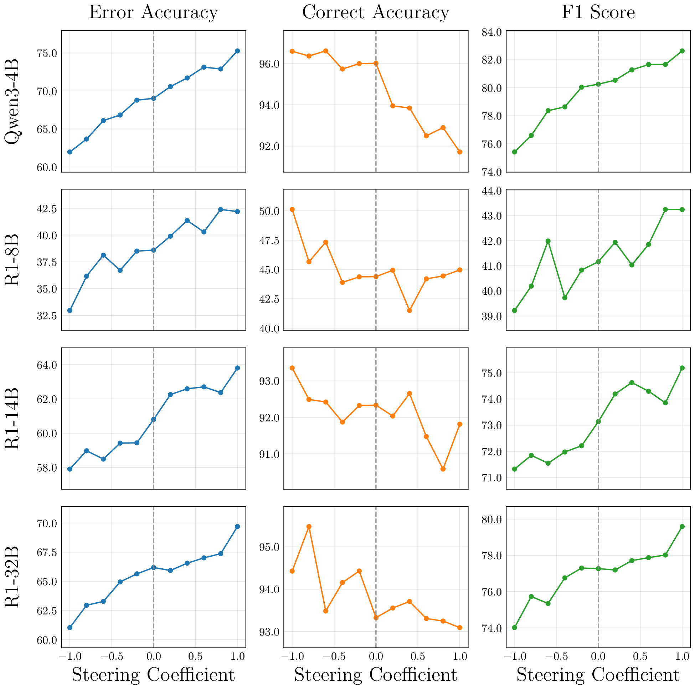
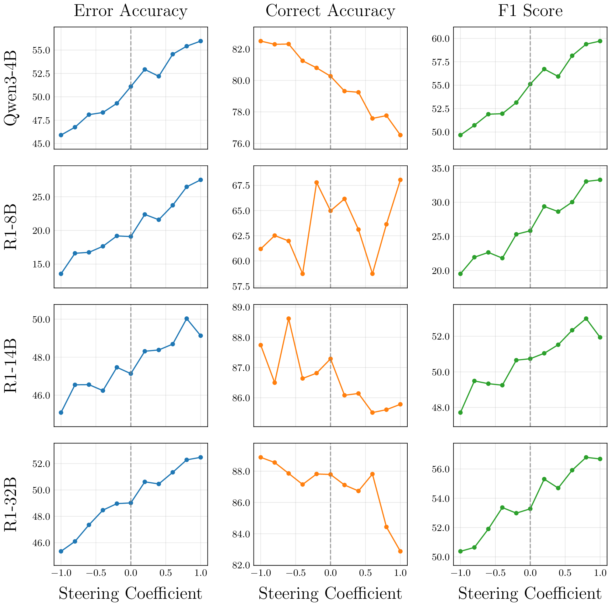
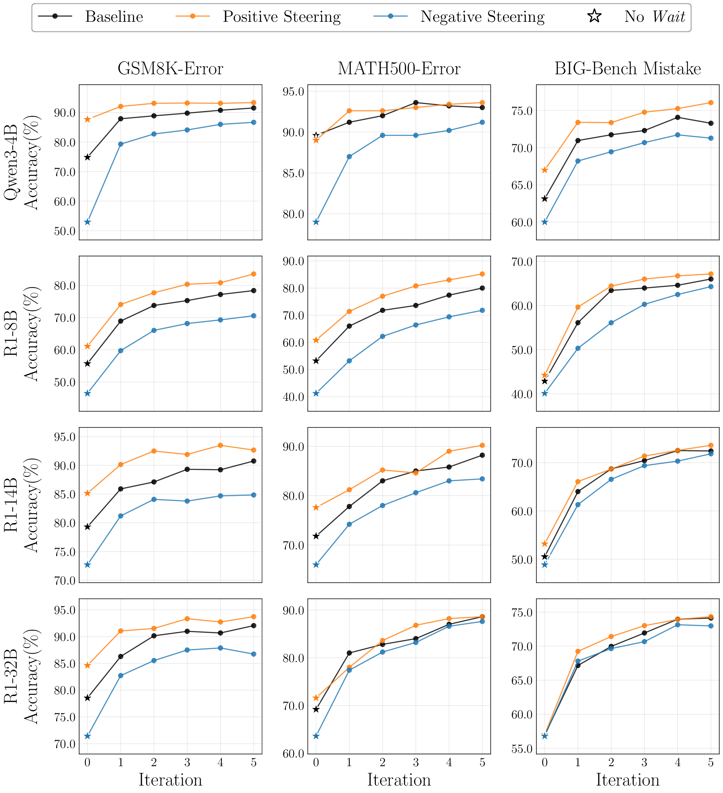

Large reasoning models often reach the right answer even when an injected error corrupts their entire chain-of-thought, and they never say they fixed anything. We trace this hidden critique ability to a single direction in activation space, the critique vector. Steering along it improves error detection and test-time scaling with no extra training.

Hidden self-correction in R1-32B. Left: original, correct reasoning. Right: an injected error ($3+4=6$) carries through to a wrong thinking conclusion (\$20), yet the model still gives the correct final answer (\$18).
Large Reasoning Models (LRMs) exhibit backtracking and self-verification mechanisms that enable them to revise intermediate steps and reach correct solutions, yielding strong performance on complex logical benchmarks. We hypothesize that such behaviors are beneficial only when the model has sufficiently strong “critique” ability to detect its own mistakes. This work systematically investigates how current LRMs recover from errors by inserting arithmetic mistakes in their intermediate reasoning steps. Notably, we discover a peculiar yet important phenomenon: despite the error propagating throughout the entire chain-of-thought (CoT) without any verbalized correction, the model still reaches the correct final answer after the thinking process finishes. This recovery implies the existence of an internal mechanism helping the model to detect errors and trigger self-correction, which we refer to as the hidden critique ability. Building on feature space analysis, we identify a highly interpretable critique vector representing this behavior. Extensive experiments across multiple model scales and families demonstrate that steering latent representations with this vector improves the model’s error detection capability and enhances the performance of test-time scaling at no extra training cost. Our findings provide a valuable understanding of LRMs’ critique behavior, suggesting a promising direction to control and improve their self-verification mechanism.
Natural mistakes followed by a recovery are rare, and labelling every reasoning step is expensive. So instead we deliberately inject an arithmetic error $e$ into the reasoning trace, right after the think token, and let the model keep thinking:
GPT-5 generates one error per question, which gives two benchmarks, GSM8K-Error and MATH500-Error. We then check the thinking conclusion and the final answer against the ground truth separately. This needs no per-step supervision.

How often the thinking and the final answer are each correct after error injection. The light-blue segments (× Thinking, ✓ Answer) are runs where the reasoning stays corrupted but the answer is right.
Qwen3-4B backtracks explicitly much more often (42.7% on GSM8K-Error, 81.9% on MATH500-Error). It still recovers silently in 20.1% and 10.8% of cases, so the mechanism appears across model families.
Is it memorization? Recovery persists on a non-public, synthetic GSM8K-style dataset built with the same pipeline.
Does the model ignore the corrupted trace? The × Think / ✓ Answer pattern persists when the question is masked, so the model has to rely on the corrupted CoT. It also persists when the answer is forced to begin with “Based on my thinking above”.
Do natural CoTs trigger critique? Rarely. On unmodified GSM8K and MATH500, recovery from a wrong CoT is 1.9% for R1-8B on GSM8K and below 1% everywhere else. Critique behavior shows up mainly when an error is actually present.
For 1,000 GSM8K training questions, we pair a baseline run (correct CoT, correct answer) with an intervened run (injected error, corrupted CoT, correct answer). Both runs give the same final answer. A linear probe on the answer-token activations still separates the two almost perfectly, both in-distribution and on out-of-distribution MATH500.
| Model | GSM8K (ID) | MATH500 (OOD) | Best layer | ||
|---|---|---|---|---|---|
| AUROC ↑ | ECE ↓ | AUROC ↑ | ECE ↓ | ||
| Qwen3-4B | 1.000 | 0.002 | 1.000 | 0.026 | 21 |
| R1-8B | 0.998 | 0.019 | 0.996 | 0.022 | 31 |
| R1-14B | 1.000 | 0.003 | 0.998 | 0.012 | 28 |
| R1-32B | 1.000 | 0.002 | 0.997 | 0.008 | 38 |
Linear probes separate the self-correcting runs from the baseline runs.
Because the separation is linear, we take the difference in means between the intervened and baseline activations at layer $\ell$. To steer, we add a scaled copy of it to the residual stream. A positive $\alpha$ amplifies the model's self-critique and a negative one suppresses it:
Projecting $v_\ell$ onto the vocabulary shows tokens of reassessment and contrast, in English and in Chinese.
| Rank | Qwen3-4B (layer 29) | R1-32B (layer 57) | ||
|---|---|---|---|---|
| Token | Logit | Token | Logit | |
| 1 | wrongly | 1.78 | Wait | 2.68 |
| 2 | Nope | 1.72 | 但实际上 (But actually) | 2.65 |
| 3 | 而且还 (And also) | 1.63 | 却 (But/Yet) | 2.64 |
| 4 | really | 1.61 | however | 2.60 |
| 5 | _that | 1.60 | but | 2.58 |
| 6 | Actually | 1.60 | 不过 (However) | 2.57 |
| 7 | 但却 (But yet) | 1.59 | Wait | 2.55 |
| 8 | ?)\n\n | 1.57 | ( | 2.49 |
| 9 | oque | 1.57 | wait | 2.41 |
| 10 | actually | 1.56 | However | 2.41 |
Top-10 tokens from the logit-lens projection of the critique vector.
On ProcessBench (Olympiad-level math) and BIG-Bench Mistake (diverse logical tasks), the model is given a solution and has to find the wrong step. Error-detection accuracy rises steadily with the steering coefficient. Positive steering ($\alpha=1$) improves it by about 5% for every model on ProcessBench, and negative steering lowers it.


Error accuracy, correct accuracy and F1 as functions of the steering coefficient $\alpha$. The dashed line marks the unsteered baseline ($\alpha=0$).
Budget forcing appends “Wait” whenever the model tries to stop thinking. We let the models continue from the injected errors and score the final answers after 0–5 forced iterations, with positive, negative and no steering.

Accuracy against the number of budget-forcing iterations on GSM8K-Error, MATH500-Error and BIG-Bench Mistake.
The same GSM8K-Error-derived vector gives modest but consistent gains on unperturbed benchmarks.
| Model | AIME24 | AIME25 | GSM8K | MATH500 | ||||||||
|---|---|---|---|---|---|---|---|---|---|---|---|---|
| −1 | 0 | +1 | −1 | 0 | +1 | −1 | 0 | +1 | −1 | 0 | +1 | |
| Qwen3-4B | 50.0 | 56.7 | 56.7 | 50.0 | 46.7 | 53.3 | 50.8 | 57.7 | 62.9 | 92.2 | 93.0 | 92.8 |
| R1-8B | 40.0 | 50.0 | 50.0 | 30.0 | 30.0 | 30.0 | 69.4 | 70.7 | 70.7 | 89.2 | 89.9 | 89.9 |
| R1-14B | 56.7 | 56.7 | 60.0 | 36.7 | 46.7 | 46.7 | 68.6 | 71.3 | 70.3 | 92.8 | 94.2 | 95.6 |
| R1-32B | 60.0 | 63.3 | 66.7 | 50.0 | 53.3 | 53.3 | 89.1 | 89.2 | 89.6 | 94.2 | 94.3 | 95.0 |
Accuracy (%) at steering coefficient $\alpha\in\{-1,0,+1\}$. Bold marks the best value in each dataset block.
LRMs silently recover from mistakes injected into their CoTs and give correct final answers without ever verbalizing the detection or the correction. Their activations separate these runs from ordinary ones, and from that separation we extract a critique vector whose meaning the logit lens confirms. Steering with the vector controls error detection across benchmarks and models. Combined with test-time scaling, it further improves correction performance. Open questions include whether this ability comes from pre-training or post-training, and what it means for CoT faithfulness and alignment, since models can correct errors without saying so.
@inproceedings{phan2026decoding,
title={Decoding the Critique Mechanism in Large Reasoning Models},
author={Phan, Hoang and Nguyen, Quang H. and Le, Hung T. Q. and Chen, Xiusi and Ji, Heng and Doan, Khoa D.},
booktitle={Advances in Neural Information Processing Systems},
year={2026}
}